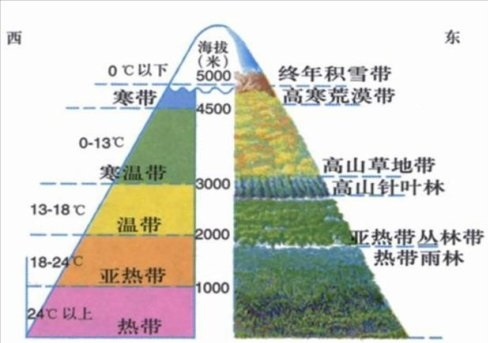
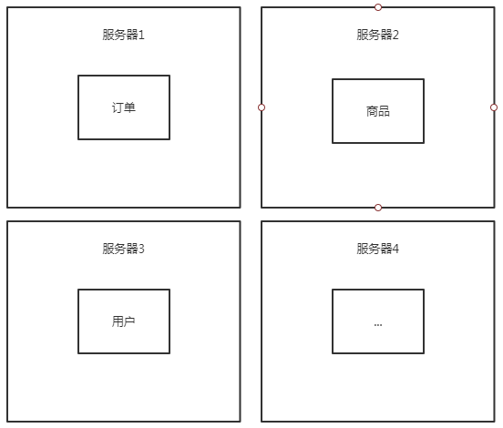

架构演变
1. 演变
随着互联网的发展，网站应用的规模也在不断的扩大，进而导致系统架构也在不断的进行交化。从互联网早起到现在，系统架构大体经历了下面几个过程:单体应用架构(SSM) -> 垂直应用架构(SpringBoot) -> 分布式架构 -> SOA架构 -> 微服务架构， 当然还有们然兴起的Service Mosh(服务网格化)。接下来我们就来了解一下每种系统架构是什么样子的， 以及各有什么优缺点。
单体应用架构 –> 垂直应用架构 –> 分布式架构 –> SOA架构 –> 微服务架构

2. 各种架构
2.1 单体应用架构 all in one
所有应用都在一台服务器里边；
以电商平台为例：
电商平台会有订单、商品、用户等模块，这些模块都是放在一个应用中，部署时打成一个war包进行部署，非常节约成本；
但是随着用户量、业务量的增大，如订单、商品模块用户访问量非常大，但是其他模块访问量一般，对于单体应用来说，此时只能针对整个应用进行负载均衡，带来的成效很低，并且如果某个模块出现问题会导致整个应用都宕机无法使用；
2.2 垂直应用架构
分层 设计开发的应用，就符合 垂直应用架构。 主要体现：前后端分离、 Web框架(MVC)
通过 联想到 植被的垂直分布，就比较好理解——分层。
各个模块

2.3 分布式架构
当垂直应用越来越多，应用之间交互不可避免，将核心业务抽取出来，作为独立的服务，逐渐形成稳定的服务中心，使前端应用能更快速的响应多变的市场需求。
此时，用于提高业务复用及整合的 分布式服务框架(RPC) 是关键。2.4 SOA架构
SOA是一种设计方法，其中包含多个服务，而服务之间通过配合最终会提供一系列功能。一个服务通常以独立的形式存在于操作系统进程中。服务之间通过网络调用，而非采用进程内调用的方式进行通信。
SOA粗暴理解：把系统按照实际业务，拆分成刚刚好大小的、合适的、独立部署的模块，每个模块之间相互独立。
比如现我有一个数据库，一个JavaWeb（或者PHP等）的网站客户端，一个安卓app客户端，一个IOS客户端。
现在我要从这个数据库中获取注册用户列表，如果不用SOA的设计思想，那么就会这样：JavaWeb里面写一个查询方法从数据库里面查数据然后在网页显示，安卓app里面写一个查询方法查询后在app上显示，IOS同样如此。这里就会出现查询方法重叠了，这样的坏处很明显了，三个地方都有相同的业务代码，要改三个地方都要改，而且要改的一模一样。当然问题不止这一个。
于是乎出现了这样的设计思想，比如用Java（或者是其他语言皆可）单独创建一个工程部署在一台服务器上，并且写一个方法（或称函数）执行上述查询操作，然后使其他人可以通过某种途径（可以是http链接，或者是基于socket的RPC调用）访问这个方法得到返回数据，返回的数据类型是通用的json或者xml数据，就是说把这个操作封装到一个工程中去，然后暴露访问的方式，形成“服务”。比如这里就是注册用户服务，而关于注册用户的所有相关增删改查操作这个服务都会提供方法。
这样一来，JavaWeb这边可以访问这个服务然后得到数据使用，安卓和IOS这里也可以通过这个服务得到数据。而且最重要的是，要修改关于注册用户的业务方法只要改这个服务就好了，很好的解耦。同理，其他业务比如商品、广告等业务都可以单独形成服务部署在单独服务器上。
还有就是一旦哪天突然有一堆人要注册，假设这堆人仅仅只是注册而不做其他事情，其他业务比如商品、广告服务等都不忙，唯独注册这个功能压力很大，而原有的一台部署了注册服务的服务器已经承受不了这么高的并发，这时候就可以单独集群部署这个注册服务，提供多几台服务器提供注册服务，而其他服务还不忙，那就维持原样。
当然，还有很多其他好处。
服务治理
什么是服务治理，就是当服务越来越多，调用方也越来越多的时候，它们之间的关系就变得非常混乱，需要对这些关系进行管理。举例，还是上面的例子，假如我有一个用户服务，一开始有调用方1和调用方2来使用这个服务，后来越来越多，将近上百个调用方，这个时候作为服务方，它只知道提供服务，却不知道具体为谁提供了服务。而对于开发者来说，知道这N多调用方和N多服务方之间的关系是非常重要的。
所以这个时候就需要能进行服务治理的框架，比如dubbo+zookeeper，比如SpringCloud，有了服务治理功能，我们就能清晰地看到服务被谁谁谁调用，谁谁谁调用了哪些服务，哪些服务是热点服务需要配置服务器集群，而对这个服务集群的负载均衡也是服务治理可以完成的重要功能之一。
这个时候就是更加完善一点的SOA了。
当然，还可以更进一步，加上服务监控跟踪等等等等之类的。
实际上SOA只是一种架构设计模式，而SOAP、REST、RPC就是根据这种设计模式构建出来的规范，其中SOAP通俗理解就是http+xml的形式，REST就是http+json的形式，RPC是基于socket的形式。上文提到的CXF就是典型的SOAP/REST框架，dubbo就是典型的RPC框架，而SpringCloud就是遵守REST规范的生态系统。
2.5 微服务架构
将例子中的各个模块拆分成一个一个细小的服务，每一个服务其实就是使用SpringBoot创建出来的应用，这些应用都需要独立进行部署
此时就会出现远程的服务调用问题，如此时想要下订单，就需要先访问订单服务，而订单服务需要查询商品信息…因此各服务之间的调用链路是非常复杂的；
如何保证这个调用高效且可靠，Spring推出了Spring Cloud以微服务为核心的整体解决方案，SpringCloudAlibaba就是其中的一个解决方案；

Nacos + Ribbon/LoadBalancer + Feign + Sentinel + Seata + Skywalking
微服务和SpringCloud Alibaba介绍
常见问题
- 这么多小服务，如何进行管理？(服务治理、注册中心[服务注册、发现、删除]) nacos
- 如何斤西瓜通讯？（restful、rpc、dubbo、feign）
- 客户端如何访问他们？（网关）gateway
- 出现问题，处理方法（容错）
- 如何排错（链路追踪）